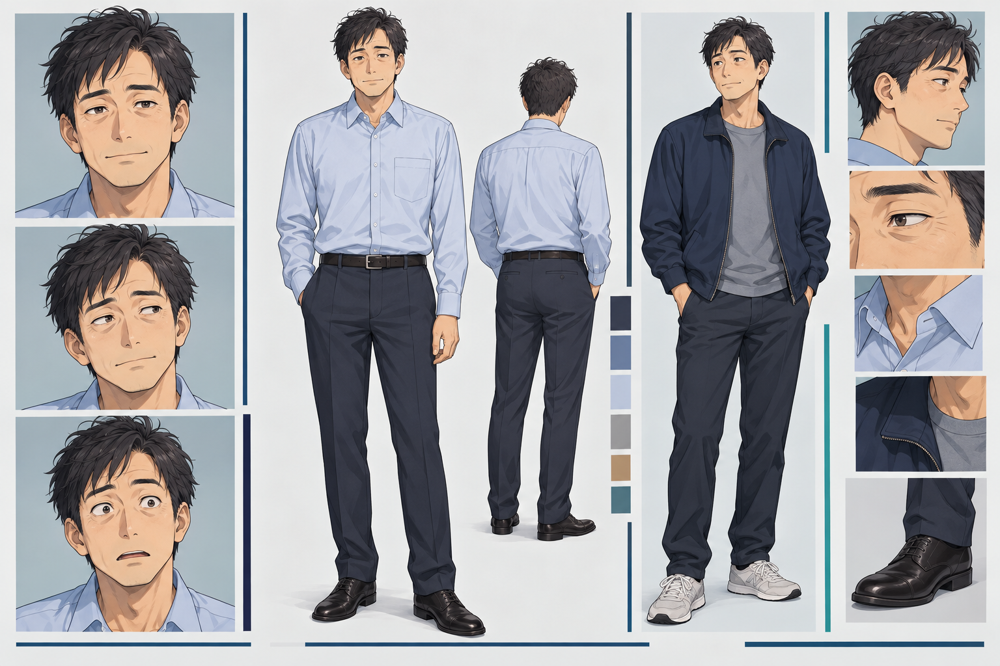

NAOTO AIZAWA01 / STORYいつもの会社員が、
いつもの会社員が、
宇宙へ行くことになった。
相沢直人、40歳。食品会社で働く、ごく普通の会社員。
ある日、会社から告げられたのは、宇宙ステーションへの現地出張。出発予定は半年後。まずは検査と訓練を乗り越えなければならない。
同じ部署の管理栄養士・小宮美緒。高校時代からの親友・高瀬真琴。仕事の引継ぎも、次の食事の約束も、地上に置き去りにはできない。
食べること。働くこと。誰かと過ごすこと。
その日常から、物語は宇宙へ向かう。